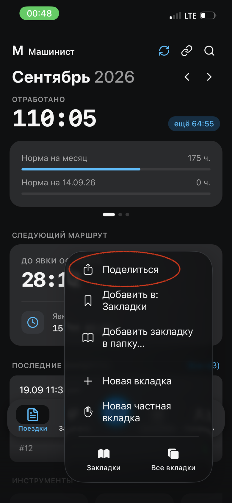
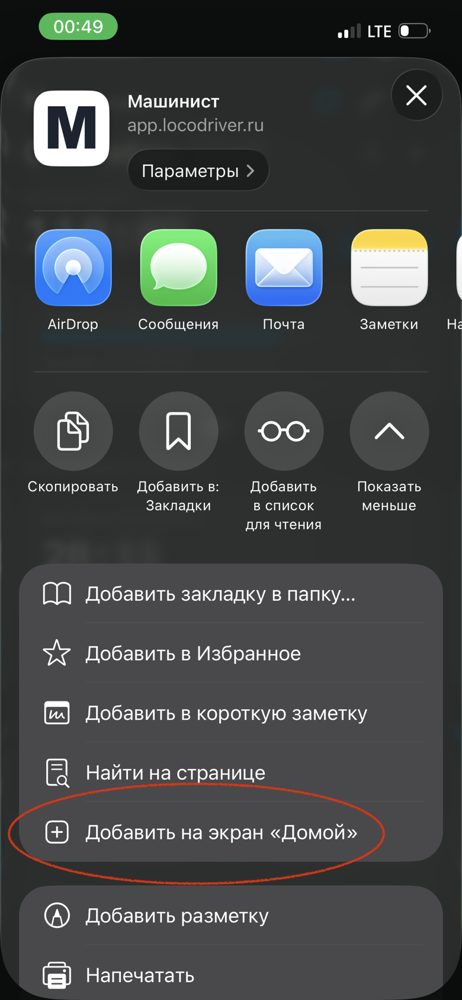
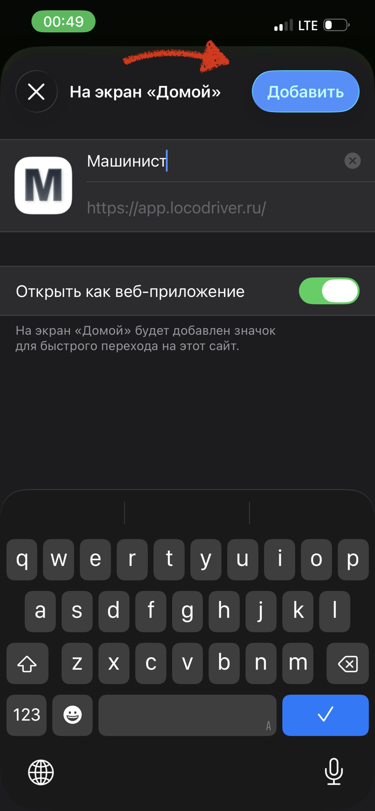

«Машинист» теперь работает в браузере — на iPhone, Android и компьютере.
Мы выпустили веб-версию приложения. Она открывается по адресу app.locodriver.ru в любом современном браузере, а на iPhone ставится на главный экран как обычное приложение — со своей иконкой и без адресной строки.
Веб-версия и приложение из RuStore работают вместе: маршрутами можно делиться между ними — ссылка, отправленная из приложения, откроется в веб-версии, и наоборот.
Что умеет веб-версия
Всё то же, что и приложение на Android. Это не облегчённая версия — те же экраны, те же настройки и тот же расчёт. Основное:
- Расчёт вспомогательного времениПриёмка и сдача локомотива и другие операции — по нормам вашего депо, время подставляется автоматически.
- Учёт топлива в литрах и килограммахПоказания при приёмке и сдаче, расход за поездку — с учётом вспомогательного счётчика.
- Техническая и участковая скоростьСчитаются по каждому поезду прямо в маршруте.
- Расчёт времени отдыхаДомашний отдых и отдых в пункте оборота — приложение само подскажет, когда можно на явку.
- Расчёт зарплаты и расчётный листСчитает тот же модуль, что и в приложении, — цифры совпадают до копейки.
- Календарь, отвлечения и мастер «Заполнить месяц»Позволяет заполнить все маршруты на месяц вперёд за пару кликов.
- Статистика и выгрузка в PDF
- Обмен маршрутами с приложениемМожно делиться маршрутом со всеми данными со своим напарником: заполнил один — пользуются оба.
- Работает офлайнПосле первого открытия загружается и без сети; данные хранятся на устройстве.
- Тот же аккаунт и та же подписка ProС Pro маршруты и настройки синхронизируются между телефоном и браузером. Оформить или продлить подписку можно прямо в веб-версии.
Где открыть
iPhone и iPad
Откройте адрес в Safari и добавьте на экран «Домой» — три шага ниже. Дальше «Машинист» запускается с иконки, как обычное приложение.
Android
Откройте адрес в браузере — или пользуйтесь приложением из RuStore, как раньше.
Компьютер
Любой браузер — просто откройте адрес. Удобно, когда нужно спокойно заполнить месяц или свериться с расчётным листом на большом экране.
Как поставить на iPhone

Откройте app.locodriver.ru в Safari, нажмите кнопку меню и выберите «Поделиться».

В списке действий нажмите «Добавить на экран „Домой“».

Проверьте, что включено «Открыть как веб-приложение», и нажмите «Добавить». Иконка «Машиниста» появится на главном экране.
Если возникнут вопросы — пишите на locodriver.app@yandex.ru.